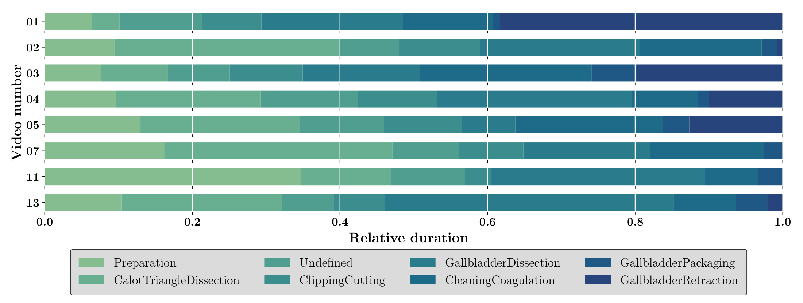
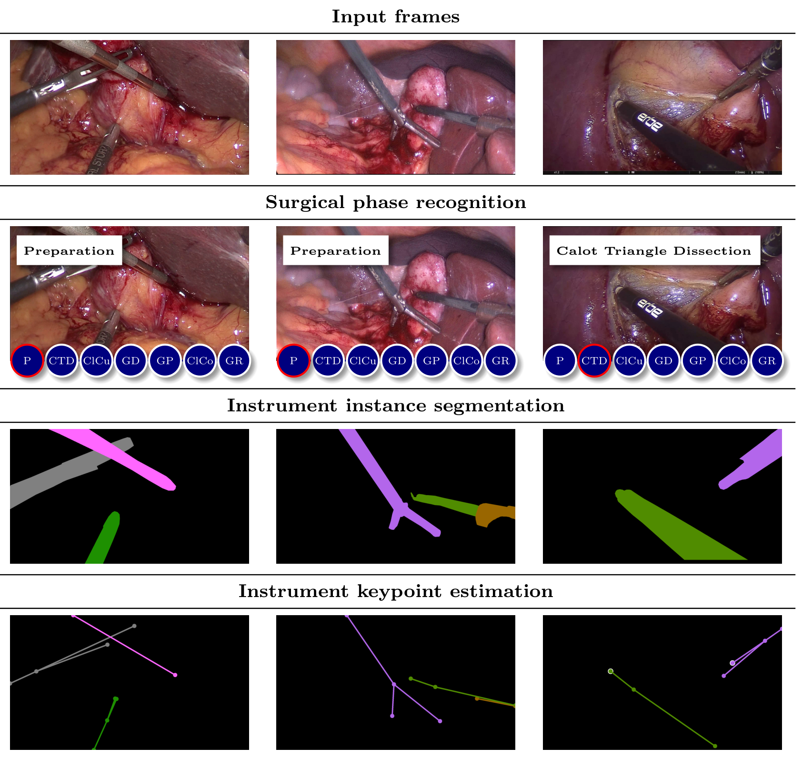
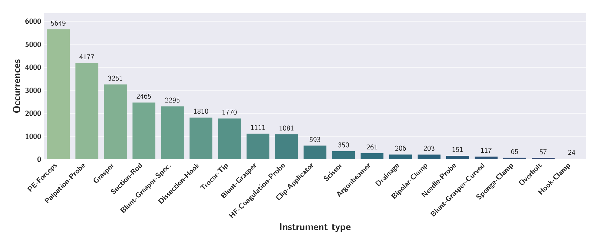
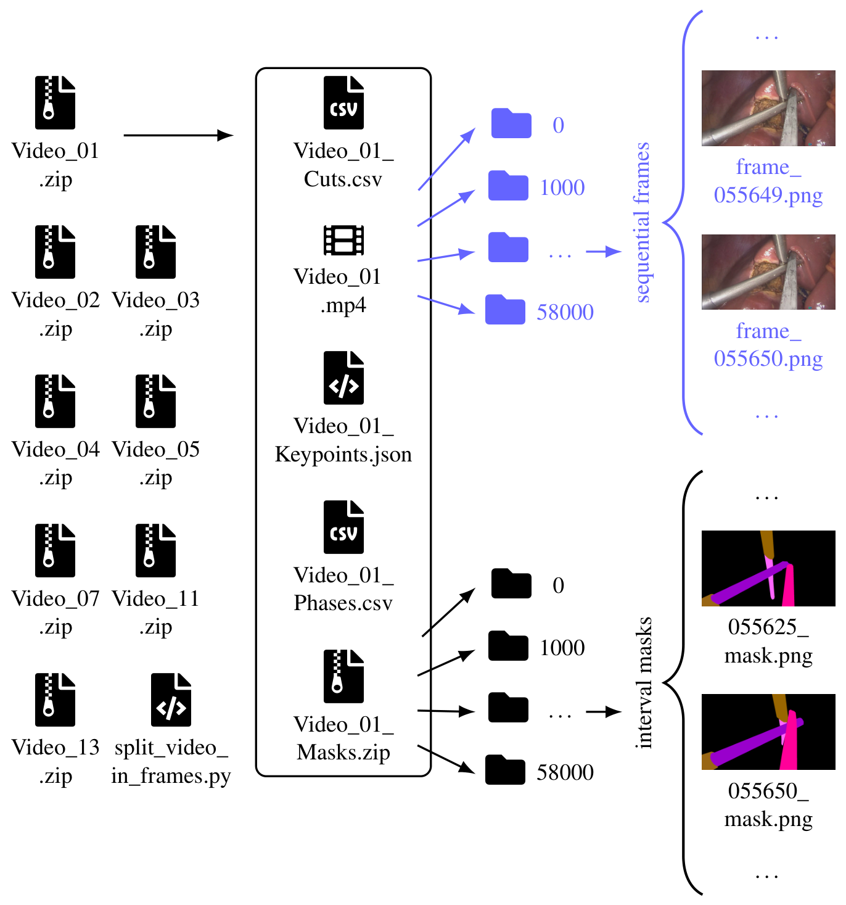

同一批完整胆囊切除手术上同时标阶段、器械实例掩码和关键点:8 个视频、三家医院
Video Dataset for Surgical Phase, Keypoint, and Instrument Recognition in Laparoscopic Surgery (PhaKIR)
Tobias Rueckert、Christoph Palm 等,OTH Regensburg 与慕尼黑工业大学附属医院 | arXiv 2511.06549,v1,预印本,2025-11-09
数据集论文腹腔镜胆囊切除手术阶段识别器械实例分割器械关键点多中心
PhaKIR 在三家德国医院的 8 个完整腹腔镜胆囊切除视频上提供逐帧阶段标签与每秒一帧的 19 类器械实例掩码和关键点,是 MICCAI 2024 挑战赛的训练集;论文不含基线,医院比例 6:1:1,阶段与关键点没有定量质检。
数字核对 全部在原文中找到结构检查 通过细节追问 12 条，其中 6 条论文未说明反向检验 3 条
图文解读
8 个主题板块，按论文的论证顺序展开
1背景与动机
手术辅助系统要同时知道器械是什么、在哪、是哪一个,以及手术进行到哪一步,而公开数据把这几件事拆在不同数据集里。 阶段识别有 Cholec80、HeiChole,器械分割有 EndoVis 2017/2018、ROBUST-MIS,关键点只有少数数据集提供。
作者还指出三类与真实手术不符的问题:只有 HeiChole 是多中心;很多数据集不区分器械类型或实例;完整手术少见,部分数据用的是非人体组织。这些缺口让时序建模和跨机构泛化都难以研究。
亮点缺口:没有一个数据集在同一批完整手术上同时标阶段、实例掩码和关键点论文的回答:PhaKIR,MICCAI 2024 PhaKIR 挑战赛的训练集
2核心观点速览
论文的答案是把三项任务标在同一批序列上:三家德国医院的 8 个完整腹腔镜胆囊切除视频,阶段逐帧标,器械实例掩码和关键点每秒标一帧。
它只是数据描述。 论文不训练模型、不报告挑战赛成绩,方法比较在同一团队的挑战赛论文 arXiv 2507.16559 中。
边界有三条: 医院比例为 6:1:1,跨中心结论很弱;阶段与关键点没有定量质检;测试集不公开,使用者要自己按视频划分。
数据8 个视频,总时长 323:55,25 fps,1920 × 1080阶段标签 485,875 帧;分割与关键点各 19,435 帧19 类器械,7 个阶段加 undefined,每件器械 2 到 4 个关键点
3视频从哪里来
能外推多远,取决于视频构成。MRI 提供 6 个视频,UKHD 和 KWS 各 1 个;UKHD 的视频就是 HeiChole2.mp4,按新协议全部重标。腹腔外画面被裁掉,裁剪帧索引随数据发布。
多中心的主体仍是一家医院: MRI 的阶段帧约占 79%。另两家各只有一个视频,单个病人或术者的差异与医院差异分不开。
Table 1 的合计行写成 486,875 帧和 19,475 帧,而逐行相加得到的是正文的 485,875 和 19,435,合计行应是笔误。复现时以文件实际帧数为准。
病人年龄、术者经验和相机型号,论文未说明,所以无法分析域偏移来自哪里。
4三项任务标了什么
阶段识别沿用 Cholec80 的 7 个阶段,另设 undefined 表示过渡。阶段起点是特征器械首次出现,终点是这些器械全部消失。undefined 的占比和评测处理论文未说明,不同论文的阶段指标口径可能不同。

论文原图编号：Figure 2。8 个视频各阶段的相对时长。各视频阶段比例差异很大,每个视频都有长短不一的过渡段。
实例分割在 CVAT 中画多边形,只标可见部分,19 类器械,同类实例分开。掩码的红、绿通道编码类别,蓝通道编码实例。
关键点按器械类型标 2 到 4 个点:入画端点、杆尖交界、一到两个尖端,每点带可见、遮挡、不存在三态。与分割不同,遮挡点允许借助前后帧推断位置,这部分真值含有标注者的推断。

论文原图编号：Figure 1。三家医院各一帧的原图与三项任务的标注。最后一行白圈是被遮挡的关键点。
分割与关键点为何选 1 fps,论文未说明。相邻两次标注隔 24 帧,逐帧时序方法只能用稀疏监督。
亮点三项标注对齐在同一序列上,分割与关键点还对齐在同一帧上遮挡关键点的真值是推断位置,分割只标可见区域
5标注怎样检查
四名有医学背景的人员标注:一名资深外科医生和三名医学生。每个视频一人初标,本人复查,再由两人依次复核。作者认为这三项任务比肿瘤分割简单、数据量大,所以选顺序复核而不是并行双标。
分割和关键点还把标注与原图并排做成视频,按时间看颜色是否跳变。关键点由未参与分割的人在掩码之上标注,顺带复核了分割分类。
唯一的定量数字是分割第二、第三轮之间的 DSC 一致性 83.64%,主要差异来自器械分类,类别错的实例记零。它衡量的是最后一轮的修改量,不是对独立真值的精度。阶段和关键点没有定量数字。
数据分割复核一致性 DSC 83.64%66 支挑战赛队伍使用,未报告系统性错误
6结果说了什么
论文没有基线,能看的是分布。器械出现帧数是长尾:PE-Forceps 出现在 5649 帧,Hook-Clamp 只有 24 帧。

论文原图编号：Figure 4。19 类器械各自出现的帧数。最多与最少相差两个数量级以上。
长尾意味着平均指标会被常见类主导。 按视频划分时,最少的几类可能在验证视频里一次都不出现,需要单独报告或合并。
7结果没说什么
- 没有基线,数据的难度和区分度要看挑战赛论文。
- 没有标注者间一致性。顺序复核时后一位看得到前一位的结果,容易沿用前人判断;83.64% 不能当作标注精度。
- 社区验证偏弱。参赛者的目标是训练模型,不一定检查标签;修正了多少错误、发过哪些版本,论文未说明。
- 测试集的视频数和医院来源论文未说明,挑战赛成绩能否代表跨中心泛化无法判断。
8复现与使用前要核对什么
作者建议按视频划分,可用留一视频或留一医院。我的判断:留一视频更可靠;留一医院时 UKHD 和 KWS 各只有一个视频,只能当作域偏移的定性参考。

论文原图编号：Figure 5。数据集目录结构。每个视频包含视频、裁剪索引、阶段、关键点和掩码五个文件。
数据在 Zenodo 申请获取,许可为 CC-BY-NC-SA,仅限非商业用途,使用时需同时引用本文、挑战赛论文和 HeiChole 论文。
自查记录
第 1 轮评原流程生成的笔记，第 2 轮评多轮思考和叙事修改之后的笔记与文稿；第 1 轮在改动前记录，两轮都附当时笔记和文稿的哈希。分数是模型自评，不是外部评审
第 1 轮 · 原流程笔记 · 笔记 0c3791837.3 分
第 1 轮原版流程笔记(自评)。采集、三任务定义、质检与文件组织都有,Table 1 已用表格重写并指出合计行笔误。D4=7:局限列了作者承认项和论文未说明项,但没有逐条说明对使用者的具体影响,例如 Undefined 阶段与稀疏监督。D5=7:定位表只按论文背景整理,没有说明与挑战赛论文的分工。D6=7:我的笔记较短。D7=7:Figure 1 放在任务三之后,离研究问题较远。D9=5:研究问题没有核心观点速览,多处数字后缺少意义说明,小节之间没有过渡。H3 尚未做数字核对。
D1 8D2 8D3 8D4 7D5 7D6 7D7 7D8 8D9 5
硬性检查 H1:pass H2:pass H3:unknown H4:pass
- 在研究问题末尾加 ### 核心观点速览
- 各节开头先写本节要回答的问题,数字后补一句意义
- 把论文未说明的内容统一写成 论文未说明 并说明限制(标注者间一致性、测试集、病人与相机信息、undefined 占比、错误修正记录)
- 深度分析加入对多中心与质检数字的替代解释
- 说明论文与挑战赛论文的分工
- 用 lint_report.py --mode note 做数字核对并登记推导值
第 2 轮 · 叙事与多轮思考后 · 笔记 12ec8df9 · 文稿 81bca8af8.0 分
第 2 轮(自评)。研究问题末尾加了核心观点速览,并写明本文与挑战赛论文的分工、论文不含基线。各节开头先说本节要回答的问题,数字后补了意义(MRI 约占阶段帧 79%、长尾对平均指标的影响)。Insight Pass 的 7 项论文未说明(1 fps 理由、标注者间一致性、测试集、病人与相机信息、undefined 占比、错误修正记录)已写入笔记与报告。挑战轮把多中心与质检两条中心论断降为部分支持和未区分,并写入深度分析。数字核对通过,Figure 4 柱值与推导值登记在 number_exceptions.json。无法修复的限制:论文本身没有基线,D3 只能写数据统计;Table 1 与 Table 4 因裁图缺陷保留占位,以 Markdown 表格替代。
D1 8D2 8D3 8D4 8D5 8D6 8D7 8D8 8D9 8
硬性检查 H1:pass H2:pass H3:pass H4:pass